Mind Your Language: Anatomy of a Classic Pilot
Deconstructing Season 1, Episode 1 — The First Lesson (1977) and its timeless lessons for English learners 📚
There is a special kind of magic that happens when a group of adults from wildly different cultures is crammed into a single classroom and told to learn English. The British sitcom Mind Your Language captured this magic with such precision that its pilot episode became a masterclass in comedic writing and a goldmine for language learners. The show premiered in 1977 and introduced viewers to Room 5, where Mr. Jeremy Brown, a fresh-faced Oxford graduate, attempts to teach English as a foreign language to a group of immigrants whose personalities are as strong as their accents.
It is important to understand that this is not just a funny television show. It is a living laboratory of linguistic collisions, cultural misunderstandings, and the raw, unfiltered struggle of learning a new language. Every scene contains a lesson about grammar, idiom, and the dangerous gap between literal translation and actual meaning. Pay attention to how the comedy arises not from cruelty, but from the very real difficulties that every language learner faces. The laughter is warm, the chaos is genuine, and the lessons are timeless. 💡
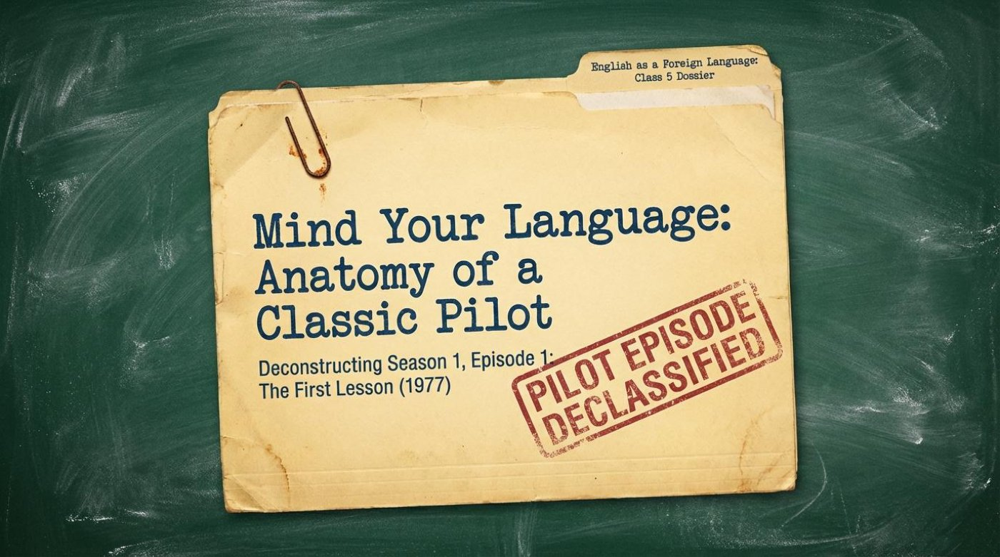
🎬 The Comedic Engine: Active Mislistening
The genius of Mind Your Language lies in a simple but powerful premise. The show establishes immediately that language is not just about vocabulary. It is about context, idiom, and the chaotic nature of literal translation. The very first scene demonstrates this with a sequence of instructions that go hilariously wrong. Mr. Brown tells Ali to go down the corridor, then turn left, then right. Ali repeats each instruction diligently, but his brain short-circuits at the final turn. The result is a system failure of epic proportions.
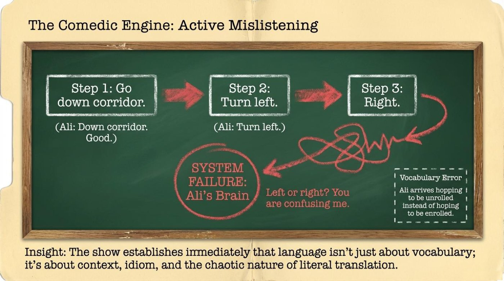
The slide captures this beautifully with the note: "Vocabulary Error: Ali arrives hopping to be unrolled instead of hoping to be enrolled." This is a perfect example of a phonetic error, where one sound changes the entire meaning of a word. Ali is not stupid. He is a highly intelligent man whose brain is processing English through the filter of his native language and his literal understanding of the world. The show teaches us that listening is not a passive activity. It requires active decoding, and when that decoding fails, the results can be disastrous — or hilarious.
🎓 From the transcript, the teacher's commentary emphasizes that this scene is the perfect icebreaker for a language class. It normalizes the experience of mishearing and misinterpreting, showing students that even native speakers can get lost in translation. The key is to laugh, correct, and move forward.
👥 The Dramatis Personae: A United Nations of Comedy
The classroom is a microcosm of the world. The show introduces a cast of characters whose nationalities, occupations, and quirks are designed to create maximum friction. The slide describes this as a "Class Register" with columns for nationality, occupation, and a comedic quirk. Ali Nadim from Pakistan is unemployed and earns more on unemployment than he would working at the Taj Mahal in Putney. Giovanni Cupello from Italy is a loud chef who claims to make "the ravioli, the spaghetti, everything." Anna Schmidt from Germany is an au pair who is ruthlessly efficient and fiercely defends German superiority. Juan Cervantes from Spain is a bartender who understands absolutely nothing and constantly responds with "Por favor?"
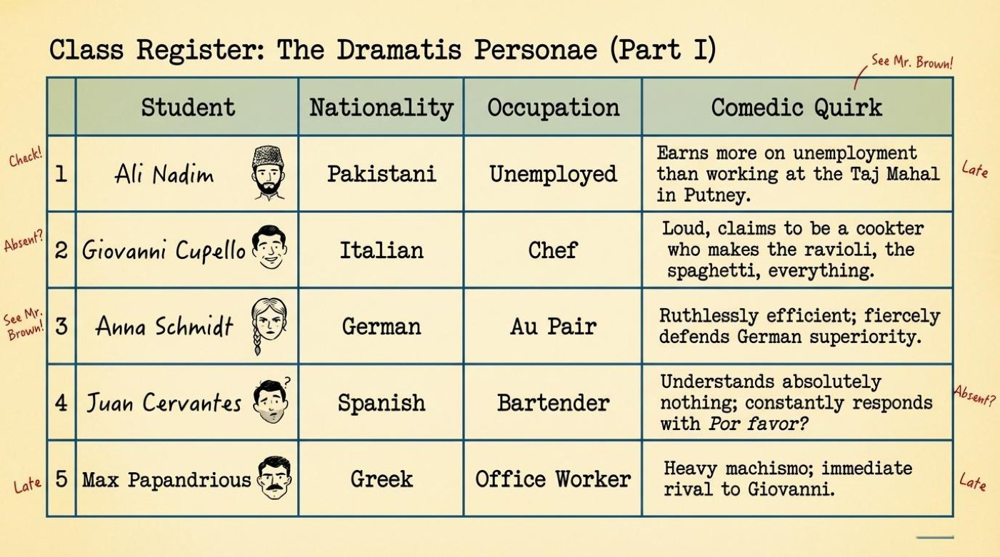
The second half of the class is equally vibrant. Jamila Ranjha from India speaks exclusively in Urdu and is oblivious to English commands. Ranjeet Singh from Punjab carries a knife and is fiercely Sikh, quick to threaten violence. Taro Nagazumi from Japan is a corporate capitalist who bows constantly and boasts of Japanese cameras. Chung Su-Lee from China is a strict Maoist who views everything through a communist lens. Danielle Favre from France is the femme fatale who instantly disrupts the European male students.
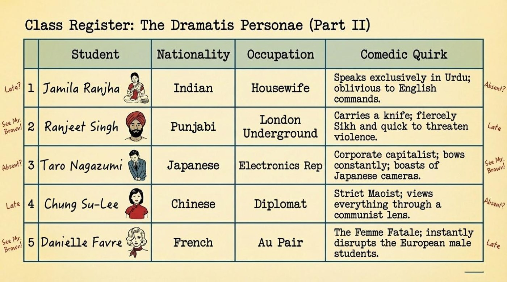
The lesson here for language learners is profound. Every student in that room brings a unique cultural framework, a set of assumptions, and a personal agenda. Learning English is not just about memorizing irregular verbs. It is about navigating the space between your own identity and the new language you are trying to inhabit. The friction is not a bug. It is a feature of the learning process. 💡
⚙️ The Mechanics of Linguistic Collision
The show's writers understood that language errors follow predictable patterns. The slide on "The Mechanics of Linguistic Collision" breaks these down into three distinct types. The first is a Literal vs. Nominal error, where a student takes a name or word at face value. When Mr. Brown introduces himself, Ali immediately points out that his skin color does not match his name. The slide quotes: "Skin Color: You are not brown, we are brown! You are white." This is not a joke about race. It is a demonstration of how literal thinking can derail a simple introduction.
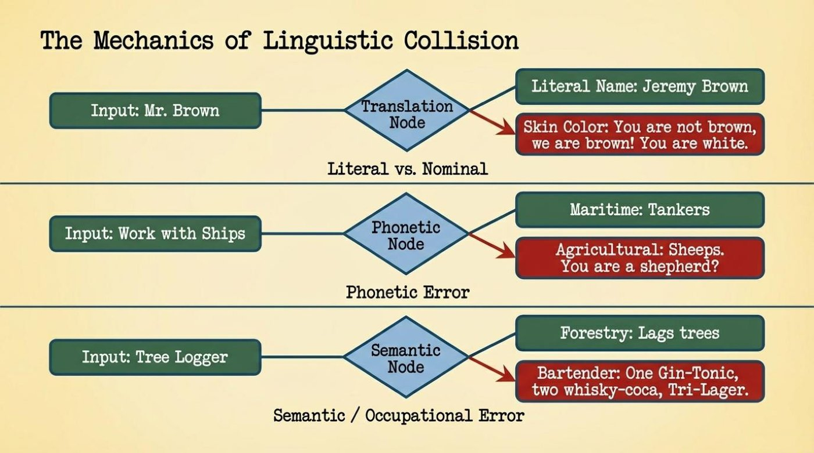
The second type is a Phonetic Error, where similar sounds create confusion. When Mr. Brown says he works with ships, the students hear "sheeps" and conclude he is a shepherd. The slide notes: "Agricultural: Sheeps. You are a shepherd?" The third type is a Semantic / Occupational Error, where context is completely lost. "Tree Logger" becomes "One Gin-Tonic, two whisky-coca, Tri-Lager" because the bartender interprets the phrase through his professional lens. These are not random mistakes. They are systematic, predictable, and incredibly useful for understanding how language acquisition actually works. 📌
💥 The Cultural Collision Matrix
The classroom is not a peaceful place. It is a battlefield of ideologies. The slide on the "Cultural Collision Matrix" maps out three distinct fronts of conflict. The first is The Holy War between Ali, a Muslim, and Ranjeet, a Sikh. The slide quotes Ranjeet's threat: "I swear by the five rivers of Punjab to slice your throat from there to there." The second is The European Front, where Giovanni, Max, and Juan fight over seating arrangements to be closer to Danielle. The slide describes the result as "threats of a punch-down and knocking a bloody block off."
The third front is The Asian Economy, where Su-Lee's Maoist communism clashes with Taro's Japanese capitalism. The slide notes: "Taro notes relations depend on political view point... Japan right wing, China left wing." These conflicts are exaggerated for comedy, but they point to a deeper truth. When you learn a language, you are not just learning words. You are learning a new way of seeing the world, and sometimes that new perspective clashes violently with your own. The key is to recognize the clash, understand it, and use it as a bridge rather than a barrier. ⚠️
💰 The Room 5 Financial Audit
One of the most memorable scenes in the pilot involves the collection of the registration fee. Mr. Brown expects £45, calculated at £5 per head for nine students. What he receives is a United Nations of currency. The slide lists the collected funds: £29.50 in sterling, 2000 Yen, 3000 Lira, 250 Pesetas, 75 Drachma, 50 Francs, and 12 Deutschmarks. The bottom line, according to the morning's financial papers, yields a school profit of exactly 142.5p. This is a brilliant metaphor for the entire show. The students are all contributing, but they are contributing in different currencies, literally and figuratively.
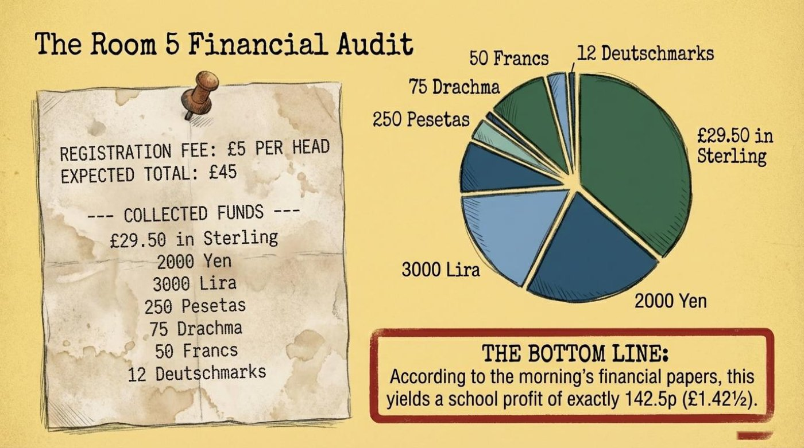
For language learners, this is a powerful reminder. You bring your own currency to the classroom. Your experiences, your culture, your way of thinking are all valuable. But to succeed in English, you must learn to convert. You must learn to trade your literal understanding for idiomatic fluency. The profit may seem small at first, but over time, it compounds into something invaluable. 💡
📝 The First Lesson: Hijacking To Be
Mr. Brown attempts to teach the verb "to be" using a standard grammar exercise. The slide shows the classic conjugation: I am, You are, He/She/It is. But the students immediately weaponize this grammar for their own purposes. Ali responds to "You are asking for a kick on your big brown back side." Mr. Brown tries to give an example: "He is Italian. She is French." Ranjeet immediately adds: "He is Barbarian." The rigid structure of English grammar is instantly hijacked by the students to hurl insults and project their own worldviews.
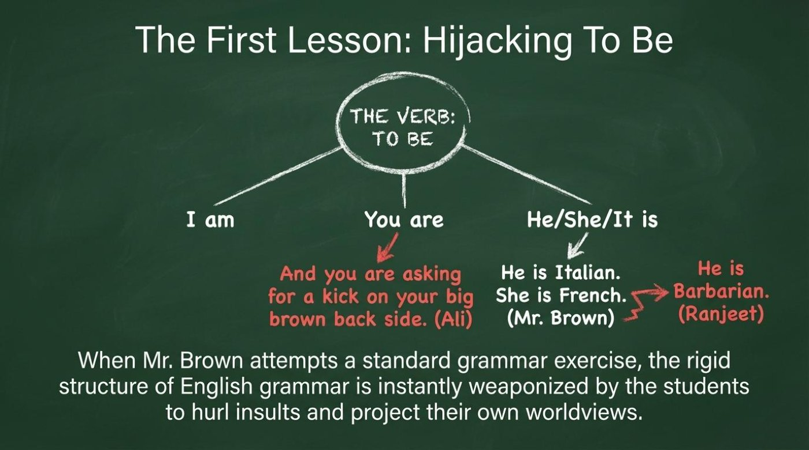
This scene is a masterclass in the difference between prescriptive and descriptive grammar. Prescriptive grammar tells you how language should be used. Descriptive grammar tells you how it is actually used. The students are not interested in abstract rules. They are interested in expressing their identities, their frustrations, and their rivalries. The grammar is just a tool. 🎓 From the transcript, the teacher points out that this is a crucial insight for any language instructor. You can teach the rules, but you must also teach the reality. The rules are a map, but the territory is messy, emotional, and deeply human.
🔄 Grammar as Character Revelation
One of the most clever sequences in the episode involves each student using the verb "to be" to reveal their true personality. Taro, the polite corporate representative, says: "I am very happy to be learning English." Then he points at Max and says: "He is a fool." Giovanni, the passionate rival, uses the exercise to insult his enemies. Su-Lee, the ideologue, quotes Chairman Mao: "It is duty of every citizen to obey the law imperial." Danielle, the flirt, says: "We are lucky to have such handsome teacher."
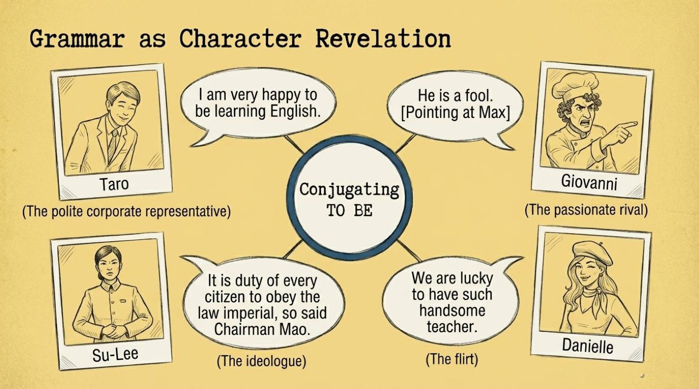
This is a profound lesson for language learners. Every sentence you construct is a window into your soul. The words you choose, the structures you prefer, the way you bend the rules — all of it reveals who you are and how you see the world. Do not be afraid to let your personality shine through your English. That is what makes language alive. ✨
🧩 The You Are Paradox
The central conflict of the episode comes to a head in the "You Are Paradox." Mr. Brown gives a prompt: "Give me a sentence using 'You are'. For example, you are from Pakistan." Ali refuses. The slide shows the rejection: "But I cannot say YOU are from Pakistan, because you are not!" Mr. Brown is trying to teach an abstract grammatical rule. Ali is firmly grounded in his own literal reality. The result is a fundamental breakdown in communication.
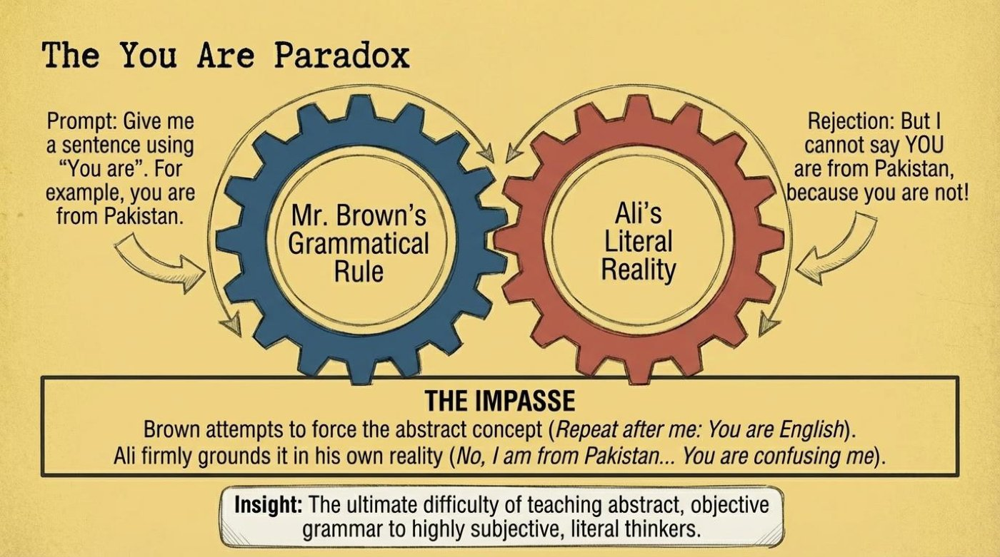
The slide describes this as "the ultimate difficulty of teaching abstract, objective grammar to highly subjective, literal thinkers." This is the core challenge of language learning. Grammar is abstract. It is a set of rules that exist in the air. But reality is concrete. It is the ground beneath your feet. Bridging that gap requires patience, empathy, and a willingness to understand why the rules exist, not just what they are. 💡
📉 The Sanity Meter (0 to 25 Minutes)
The show uses a visual metaphor to track Mr. Brown's descent into madness. The slide shows a "Room 5 Sanity Meter" that starts at "Pristine Diploma" and ends with "Nailed Shut." The meter tracks the escalating chaos of the first lesson, from breaking up an attempted murder to a race riot to a punch-up. By the end, Mr. Brown is not just exhausted. He is fundamentally changed. The final quote from the slide is: "That window you nailed up... I think we ought to put a few more nails in. Just to be on the safe side."
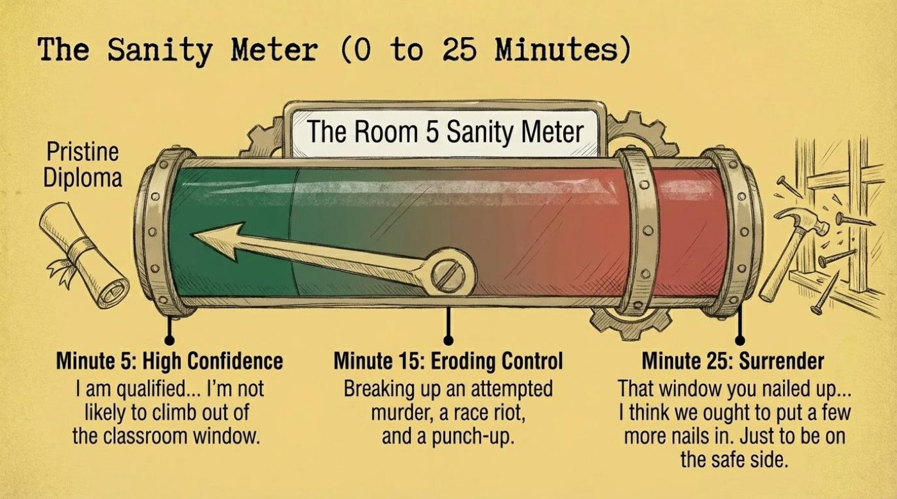
This is a reminder that learning a language is an emotional journey. It is not just about memorizing vocabulary. It is about surviving the chaos, adapting to the unexpected, and finding humor in the face of frustration. The meter is a metaphor for the learner's own experience. You start with confidence. You end with a deeper, more resilient understanding. 📌
🏛️ The Three Pillars of Sitcom Architecture
The slide on the "Three Pillars of Sitcom Architecture" explains why the show works so well. The first pillar is High Density. The show introduces highly distinct characters and puts them into conflict within a mere 25 minutes. The second pillar is Universal Friction. The show uses language — the most fundamental human tool — as both the ultimate barrier and the ultimate equalizer. The third pillar is The Anchor. Jeremy Brown acts as the requisite straight man, absorbing the chaos of a hurricane of caricatures without breaking.
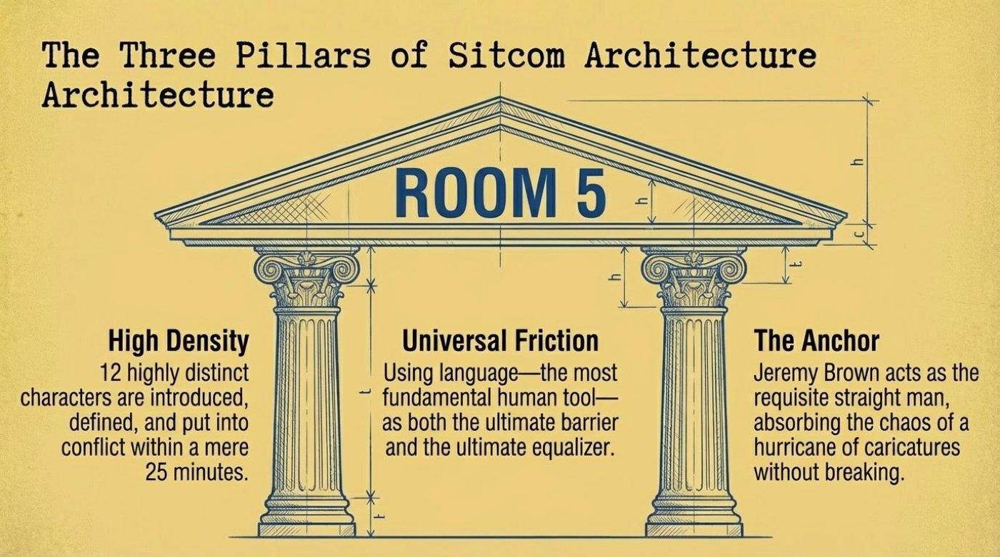
These pillars are not just for sitcoms. They are for any successful language learning environment. You need density: a rich, immersive experience with lots of input. You need friction: challenging situations that force you to adapt. You need an anchor: a teacher, a mentor, or a method that keeps you grounded. When these three elements are in place, learning becomes not just possible, but inevitable. 🎓
🌍 A Universally Exportable Premise
Despite relying heavily on 1970s British cultural stereotypes, the core comedic engine of Mind Your Language was universally relatable. The slide shows a world map with pins in the United States, India, Nigeria, and Japan, marking the global remakes of the show. The chaotic language class proved to be an infinitely adaptable sitcom format. The slide lists the remakes: What A Country! in the United States, Zaban Sambhalke in India, Second Chance! in Nigeria, and Nihonjin no shiranai nihongo in Japan.
The lesson is clear. The struggle to learn a new language is a universal human experience. It transcends borders, cultures, and generations. The specifics may change, but the core challenge remains the same. You are trying to bridge a gap between your inner world and the outer world. You are trying to find your voice in a new tongue. And that is a story worth telling, again and again. 💡
📖 Vocabulary and Language Takeaways
The pilot episode is packed with vocabulary that is both useful and entertaining. The following terms are essential for understanding the show and for expanding your own English repertoire. Pay attention to how each term has both a literal meaning and a figurative, contextual meaning. The material explains each term with quotes from the slides, and we have added commentary to help you use them in your own conversations.
1. Active Mislistening — This refers to the phenomenon where a listener actively processes what they hear but arrives at the wrong conclusion. It is not passive hearing. It is an active, albeit flawed, attempt to decode meaning. The slide quotes the vocabulary error: "Ali arrives hopping to be unrolled instead of hoping to be enrolled." This is a classic example of a phonetic error. The words "hoping" and "hopping" sound similar, but their meanings are worlds apart. The material explains this as a vocabulary error, highlighting how a single sound can change the entire semantic landscape. For learners, this is a reminder to listen for context, not just individual sounds.
2. Literal vs. Nominal — This distinction is at the heart of many of the show's jokes. A literal meaning is the most basic, concrete interpretation of a word. A nominal meaning is the name or label given to something, which may not correspond to reality. The slide quotes the exchange about Mr. Brown's name: "Skin Color: You are not brown, we are brown! You are white." Ali is operating on a literal level, while Mr. Brown is operating on a nominal level. The material explains this as a "Translation Node" error, where the input is processed through a literal framework. For learners, it is important to understand that names and labels are often arbitrary, and meaning is derived from context.
3. Phonetic Error — A phonetic error occurs when a listener mishears a word because of similar sounds. The slide provides the example of "Work with Ships" being misheard as "Sheeps." The material explains: "Agricultural: Sheeps. You are a shepherd?" This is a phonetic error, and it is one of the most common challenges for language learners. The key to overcoming it is to practice listening in context, to use visual cues, and to ask for clarification when something sounds off.
4. Semantic / Occupational Error — This type of error occurs when a word or phrase is interpreted through the lens of one's profession or personal experience. The slide gives the example of "Tree Logger" being interpreted as a drink order: "Bartender: One Gin-Tonic, two whisky-coca, Tri-Lager." The material explains this as a "Semantic Node" error. The bartender is not stupid. He is simply filtering the input through his own occupational framework. For learners, this highlights the importance of understanding the cultural and professional contexts in which words are used.
5. To Be (Hijacked) — The verb "to be" is one of the most fundamental and most irregular verbs in English. In the show, it is hijacked by the students to express their own identities and rivalries. The slide quotes various students: "I am very happy to be learning English." "He is a fool." "It is duty of every citizen to obey the law imperial." "We are lucky to have such handsome teacher." The material explains this as "Grammar as Character Revelation." The verb "to be" becomes a tool for self-expression. For learners, this is a reminder that grammar is not just a set of rules. It is a means of communicating who you are.
6. The You Are Paradox — This paradox arises when a grammatical rule conflicts with a personal truth. Mr. Brown asks Ali to say "You are from Pakistan." Ali refuses because it is factually incorrect. The slide quotes: "But I cannot say YOU are from Pakistan, because you are not!" The material explains this as "the ultimate difficulty of teaching abstract, objective grammar to highly subjective, literal thinkers." For learners, this is a powerful lesson. Grammar is a tool for communication, but it must be grounded in reality. Do not be afraid to question a rule if it does not match your experience.
7. The Sanity Meter — This is a visual metaphor for the emotional toll of the first lesson. The slide tracks Mr. Brown's journey from "Pristine Diploma" to "Nailed Shut." The material quotes: "I am qualified... I'm not likely to climb out of the classroom window." and "That window you nailed up... I think we ought to put a few more nails in. Just to be on the safe side." The sanity meter is a reminder that language learning is an emotional rollercoaster. It is important to acknowledge the stress and to find healthy ways to cope with it.
8. The Anchor — This term refers to the character or element that provides stability in the midst of chaos. The slide describes Jeremy Brown as "the requisite straight man, absorbing the chaos of a hurricane of caricatures without breaking." The material explains this as one of the "Three Pillars of Sitcom Architecture." For learners, the anchor is your support system. It is your teacher, your study group, your favorite language app, or your own inner resolve. Find your anchor, and you can weather any storm.
🃏 Interactive Vocabulary Flip-Cards
Click on each card to reveal its full meaning, contextual usage, and why it matters. Use the button to flip all cards at once.
🔍 Deeper Meaning: Metaphors and Symbols
The pilot episode is rich with metaphors and symbols that elevate it from a simple comedy to a profound commentary on language, identity, and human connection. The following four elements are key to understanding the show's deeper significance.
1. The Classroom as a Microcosm of the World 🌍
Room 5 is not just a classroom. It is a miniature United Nations. Every student represents a different country, a different culture, a different worldview. The slide on the "Dramatis Personae" lists students from Pakistan, Italy, Germany, Spain, Greece, India, Punjab, Japan, China, and France. The material explains that the show "establishes immediately that language isn't just about vocabulary; it's about context, idiom, and the chaotic nature of literal translation." The classroom is a symbol of the globalized world, where people from all backgrounds must find a way to communicate. The conflicts that arise are not just personal. They are cultural, historical, and political. The show suggests that the classroom is the first place where these global tensions can be addressed, understood, and perhaps even resolved.
2. The Nailed-Shut Window as a Symbol of Desperation 🪟
The image of the window being nailed shut is one of the most powerful symbols in the episode. It represents the desperation of a teacher who has been pushed to his absolute limit. The slide on the "Sanity Meter" shows the progression from "Pristine Diploma" to "Nailed Shut." The material quotes Mr. Brown: "That window you nailed up... I think we ought to put a few more nails in. Just to be on the safe side." The window is a symbol of escape, of freedom, of the outside world. By nailing it shut, Mr. Brown is acknowledging that there is no escape from the chaos of the classroom. He must face it, survive it, and ultimately, learn from it. For language learners, this is a powerful metaphor. You cannot escape the difficulties of learning a new language. You must confront them, embrace them, and keep going.
3. The Sanity Meter as a Symbol of the Emotional Journey 📉
The "Room 5 Sanity Meter" is a visual representation of the emotional arc of the first lesson. It starts at "Pristine Diploma" and ends at "Nailed Shut." The material tracks the events that cause the meter to drop: "Breaking up an attempted murder, a race riot, and a punch-up." The sanity meter is a symbol of the learner's own emotional journey. Learning a new language is not a linear process. It is a series of highs and lows, successes and failures, moments of clarity and moments of utter confusion. The meter reminds us that it is okay to feel overwhelmed. It is okay to feel like you are losing your mind. The important thing is to keep going, to keep learning, and to keep finding humor in the chaos.
4. The Three Pillars as a Symbol of Structure 🏛️
The "Three Pillars of Sitcom Architecture" — High Density, Universal Friction, and The Anchor — are not just structural elements of a television show. They are symbols of the essential components of any successful language learning environment. High Density represents the need for rich, immersive input. Universal Friction represents the need for challenge and conflict. The Anchor represents the need for stability and support. The material explains that "Jeremy Brown acts as the requisite straight man, absorbing the chaos of a hurricane of caricatures without breaking." The three pillars are a symbol of the balance that is required for effective learning. You need to be challenged, but you also need to be supported. You need to be immersed, but you also need to be grounded. When these three elements are in balance, learning becomes not just possible, but inevitable. 💡
🧠 Comprehension Check
It is time to test your understanding of the pilot episode and the vocabulary we have explored. The following quiz contains nine questions based on the content of the lesson. Each question provides instant feedback. Pay attention to the explanations, and use the score counter to track your progress. Good luck! 📚
🎯 Quiz
🎓 Conclusion: Class Dismissed
The pilot episode of Mind Your Language is a masterclass in comedy, but it is also a masterclass in language learning. It establishes a lethal comedic threat, defines a massive ensemble entirely through interpersonal conflict, lets the premise naturally generate the jokes, and ends exactly where it began — but with the stakes proven terrifyingly real. The final slide of the dossier says it best: "The First Lesson is a masterclass in pilot writing."
The main takeaway for language learners is this: language is not just a set of rules. It is a living, breathing, chaotic, and deeply human phenomenon. It is about context, idiom, and the messy reality of communication. Do not be afraid to make mistakes. Do not be afraid to misunderstand. Do not be afraid to laugh at yourself. Every mistake is a lesson. Every misunderstanding is an opportunity to learn something new about the language and about yourself. 💡
So, what should you do next? Go back to the original material. Watch the episode. Listen to the dialogue. Pay attention to the vocabulary. Use the interactive tools in this article to practice. And most importantly, keep learning. Keep practicing. Keep minding your language. The journey is long, but it is also incredibly rewarding. You are not alone in this. We are all in Room 5 together. 📚✨